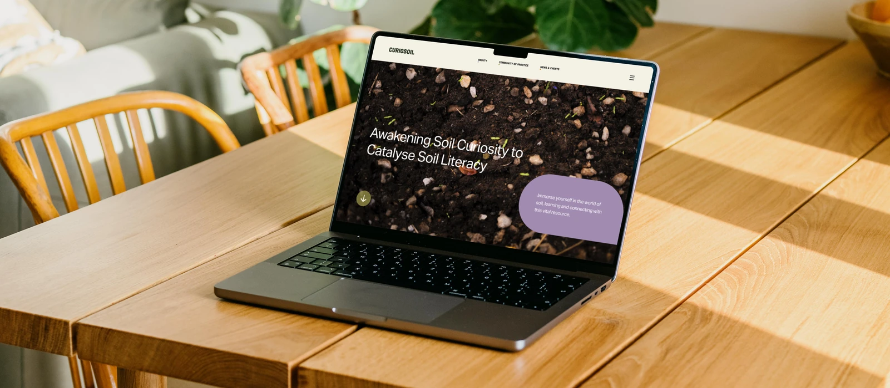
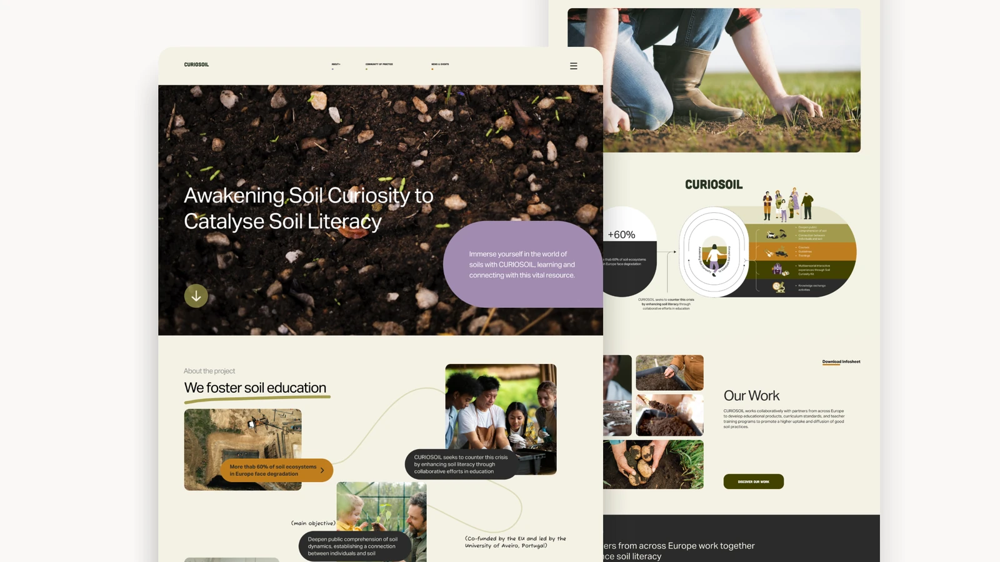
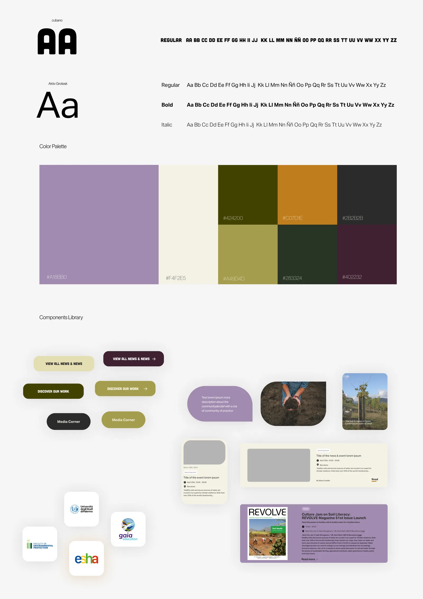

Web Design · 2024
Curiosoil
A sustainability educational platform designed for REVOLVE — making soil science accessible, intuitive, and engaging for everyone from students to researchers across the EU.

Overview
CURIOSOIL is a program for Awakening Soil Curiosity to Catalyse Soil Literacy — a four-year, EU co-funded project focused on enhancing soil education. The platform addresses the critical need for a better understanding of soil through an intuitive, fun design that welcomes everyone to learn and participate.
The website covers an abundance of services: online courses for every educational level, a community of practice space for experts, and different digital learning environments — all requiring a carefully crafted UX to surface the right content to the right user.
Challenges
CURIOSOIL has an extensive amount of information, services, and features to cover. The core challenge was collecting and categorizing them in a way that fulfills every target user's needs without overwhelming anyone — from a primary school student to a soil researcher.
Additionally, new information kept arriving during the design process from different project partners, meaning the sitemap and information architecture were constantly evolving and expanding throughout.
UX Approach
To design an architecture that gives a smooth flow and covers all the information and services, three research methods were conducted:
User Personas — We identified and developed personas for four distinct user groups: journalists, researchers, the general public, and teachers and students. These personas guided design decisions across the entire site to ensure each user type's specific needs and goals were met.
Card Sorting — This method helped organize content in a way that is intuitive for users, allowing us to categorize and prioritize information based on how users naturally expect to find it.
Benchmarking — We compared the site's structure and features against similar EU educational projects to identify best practices and opportunities for improvement.

Style Guide
The design system for CURIOSOIL introduced a level of micro-interaction that elevated the overall experience. After leading three prior projects, this was the moment to add small animations — buttons, hovers, transitions — to bring the interface to life and reflect the playful spirit of the platform.
In partnership with senior graphic designer Dariana, custom illustrated characters were also integrated into the website, giving CURIOSOIL a distinctive, approachable visual identity that stands out in the EU educational space.

Prototype & User Testing
After prototyping, several rounds of user testing were conducted to verify the interfaces were smooth and that the design system was friendly to navigate. Testing confirmed the information architecture held up across all four user types, and interaction patterns were refined based on real feedback.